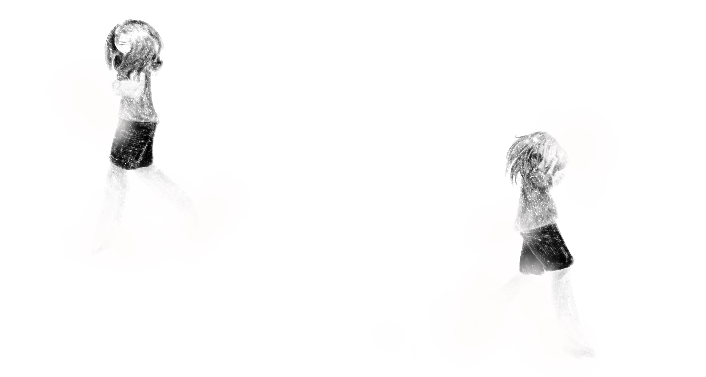

You need to get this done now. You know the longer you leave it, the more stressed you'll be: better to get it off your plate as soon as you can. You sit down to work on it. You make sure you have everything required, including the small details, and..
You stare blankly at the layout before you. Your mind goes empty, your limbs freezing to stone as you lose sensation in your body. For a moment, you are nothing. Slowly, you feel a gentle wave of panic wash over you, bringing you back just enough to flip through your assembled materials once more. You can do this. You know you can.
You begin to format the project. You get as far as writing down your name before the fog is back, bringing with it a current of desperation to do literally anything else. The frantic energy threads through the fog of your mind, and anytime you try to use it, it dives back into the nothingness. After a moment of internal struggle, you stand back up.

Your body feels light. You can no longer see the room you're in, all of your attention taken by the project sitting on your desk. You cannot tear your gaze away, although you try.